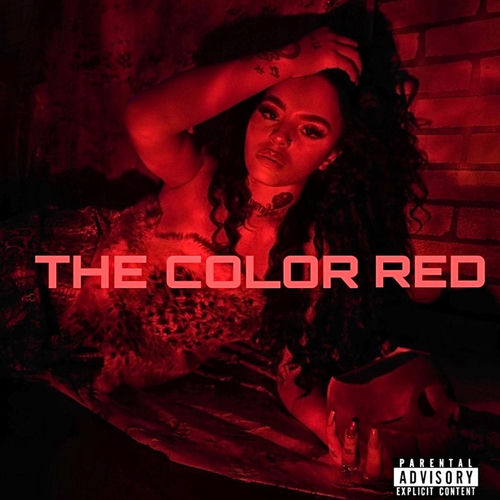

Emani 22
Emani Johnson, better known as Emani 22, was an American R&B singer. She was from Lancaster, California. She collaborated with Trippie Redd on the songs "Emani's Interlude" and "Fire Starter", from his 2018 mixtape A Love Letter to You 3.
Complete Discography & Tracklists (8)
2019 Dripomatic 🎵 0 Tracks
No tracks registered.
2020 THE COLOR RED 🎵 7 Tracks
2020 MY INTUITION (feat. Thouxanbanfauni) 🎵 0 Tracks
No tracks registered.
2020 Slime (feat. Kodie Shane, Baby Goth) 🎵 0 Tracks
No tracks registered.